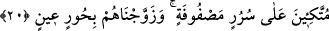

için” denilir. “Henîen” kelimesi ya “eklen henîen” şeklinde mahzuf bir masdarın sıfatı
veya mahzuf bir mefûlu bihin sıfatıdır. Âyette yiyecek ve içeceklerin açıkça
zikredilmemesi, onların çok çeşitleri ve son derece bol olduğuna delâlet etmektedir.
Cennet yiyecek ve içecekleri içinde, bunların lezzet ve güzelliklerini bozacak hiçbir
eksiklik olmayacaktır. Dünyada olduğu tarzda yemeden ileri gelen hazımsızlık, hastalık
ve sıkıntılar gibi üzüntü verici şeyler oradaki yeme içme husûsunda asla vâki
olmayacaktır.
İbn Kemâl, Türkçede “yahnî” adıyla meşhur iyi pişirilmiş et yemeğinin, hazmı kolay
ve âfiyetle yenebilecek güzel bir yiyecek olduğunu söyler.
“Yaptıklarınız” sebebiyle, onlara karşılık “âfiyetle yiyin, için.”
Fethu’r-Rahman’da bu husus şöyle açıklanır: Cennetin makamları ve nimetleri,
ameller karşılığıdır. Ama cennete girebilmek, bizzat Allah’ın rahmeti ve o rahmetin
insanı bürümesiyle olur. Bu bakımdan yeme, içme ve âfiyet içinde olma cennete girmeyi
ifâde etmezler. Kulların sâlih amelleri, Allah’ın onları illa da nimetlendirmesini gerekli
kılmaz. Fakat Allah Teala, takdîr-i ezelîsinde nimetlendirmeyi yazdığı kulu hakkında
sâlih amelleri buna bir işâret kılmış, sevap ve ikabı da amellerle kendini gösteren kulun
kesbine bağlamıştır.
İmam Zâhid şöyle der: Her ne kadar Hakk’ın vaadi kulun ameline bağlıysa da asıl
olan ilâhî lütuftur. Yoksa yarın âhirette bizim amelimizin kabul olacağı kesin midir?
Amelim kendi gücümle değildir
Senin lütfunla terâzi dengelenir.
Kendi lütfunu bana yâr eyle
Amelimde kendi adâletinle muâmele etme!
Sehl şöyle demiştir: Amellerin karşılığı yeme ve içmedir. Kulların amellerinin
bundan öte bir karşılığı yoktur. Fazilet şarabı, “Rabbleri onlara tertemiz bir içecek
içirmiştir” (el-İnsan 76/21) âyetinde belirtildiği üzere mükâşefe ve müşâhede rü’yeti
üzerine içilen içecektir.
20. Sıra sıra dizilmiş koltuklara yaslanarak. Ayrıca biz onları, ceylan gözlü
hûrilerle evlendirmişizdir.
“Koltuklara yaslanarak.” onlara “yiyin için” denir. Sürûr, serîr kelimesinin çoğulu
olup “üzerine oturulan şey” anlamındadır. Bu, cennetteki ilk nimetten dolayı hasıl olan
sürûrdan dolayı kullanılmış bir kelimedir. Ölünün boş tabutuna da bu adın verilmesi
sadece sûret sebebiyledir. Ayrıca hadis-i şerifte “Dünya müminin zindanıdır”[40]